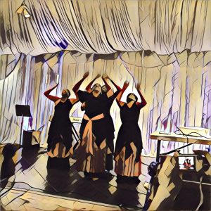

The following is part one of an article that will be published in three successive installments.
TRINCULO Servant-monster! The folly of this island! They
say there’s but five upon this isle: we are three of them;
if th’other two be brained like us, the state totters.[1]
In the expanse of scholarship on W.H. Auden’s oeuvre, direct comparisons of “For the Time Being: A Christmas Oratorio” and “The Sea and the Mirror: A Commentary on Shakespeare’s The Tempest”—and thus sustained treatments of For the Time Being[2] as a singular intra–related publication—are curiously scarce. Protracting the book’s dichotomous reception in 1944-1945, when most critics gauged the poems as in essence unrelated and read “For the Time Being” as a hapless companion to “The Sea and the Mirror,”[3] this lacuna in Auden studies is at odds with For the Time Being’s own textual history.
As Edward Mendelson notes, Auden reworked key abandoned portions of the Christmas oratorio for inclusion in his poetic commentary on The Tempest: thus, a deserted oratorio lyric in which the poet’s aesthetic talent or literary “gift speaks in the first person” resurfaces in the commentary as the crucial “‘Postscript’ spoken by Ariel to Caliban: ‘Weep no more but pity me, / Fleet persistent shadow cast / By your lameness’.”[4] Likewise, in replacing Simeon-as-poet with Simeon-as-theologian in the oratorio’s final draft, Auden reworked the former’s discarded lines and incorporated them into the commentary’s second section, “Prospero to Ariel,” which features a “lonely, self-isolating Prospero.”[5]
Bibliographically and compositionally, therefore, “For the Time Being” is intricately linked to “The Sea and the Mirror.” Nevertheless, in recent Auden scholarship, perceived distances between the poems appear to have all but crystallized, even to fallacious extents. For instance, Matthew Mutter aptly enlists Auden’s “criticism of magical poetics” to appraise the scholarly return of “magic and occultism to prominence as categories for understanding the aspirations of modernist literature.”[6]
Yet, after tracing the contours of disenchantment through Auden’s adaptations of Prospero and Caliban, Mutter writes: “Auden knew very well that Enlightenment rationalism could be complicit with imperialism and dramatized the problem in his Christmas oratorio, For the Time Being (1942), which was published just two years before The Sea and the Mirror (1944).”[7] Conspicuous in light of his esteem for Arthur Kirsch’s Auden and Christianity as one of “the best books on the intellectual and poetic consequences of Auden’s conversion to Christianity,”[8] Mutter’s ostensibly minor error on the poems’ publication history derives from his consultation of Auden’s Collected Poems,[9] which Mendelson arranges chronologically.
In that volume, one conveniently finds dates of composition, not publication, italicized at the end of each poem. While this oversight does not markedly compromise the rigor of Mutter’s perspectives on each individual poem, it does hinder him from interlocking them in ways their very co-publication solicits. It deters him, in other words, from engaging Kirsch’s shrewd perception as to why Auden “placed ‘For the Time Being’ last in the volume, though he wrote it first”: he did so “because he thought that the secular, if religiously informed, exploration of art in The Sea and the Mirror should be a prelude to the manifestly religious representation of the Incarnation in ‘For the Time Being’.”[10]
Arguably, this organizational decision informs the poems individually by signposting their inverted trajectories in For the Time Being and Collected Poems. Without a scrupulous bibliographic trace, however, cross-pollination from one poem to the other does not become an exegetical priority. Mutter, that is, grants the poems only one flickering instance of continuity: “Prospero’s desire to take revenge on the Romans for their grammar[11] and Herod’s self-conscious linking of imperialism and secular rationality[12] disclose Auden’s awareness of the fact that magical thinking is an understandable mode of resistance to the tyranny of secular empire.”[13] Sound as it is, this argument verges on the incidental; for, in “The Sea and the Mirror” and “For the Time Being,” Prospero and Herod are respectively dwarfed by far grander figures—namely, Caliban and Christ—who have surprisingly eluded cross-referencing in Auden studies.
To underline the appositeness of such cross-referencing, I would counterpoise Mutter on Auden’s aesthetics of disenchantment and Robert Caserio on Auden’s aesthetics of queer citizenship in his American phase. Furthering Mendelson’s view that Auden’s poetry harbors “the voice of a citizen who knows the obligations of his citizenship,”[14] Caserio does not misconstrue the bibliography of For the Time Being. Nevertheless, he does withhold the specificity of “The Sea and the Mirror” itself from his key argument:[15]
Auden, even as he turns from one national citizenship to another, acts out…a conversion of citizenship itself, a new
paradoxical—indeed perverse—characterization of it. Taking out American citizenship papers, Auden repudiates detached political neutrality; at the same time, by becoming a U.S. citizen during the wartime composition of New Year Letter, For the Time Being, and The Age of Anxiety, the poet uses the poems to redefine what it means to be a modern national. The redefinition limns the uncertainty of one’s political passport. …The subject and the origin of Auden’s civic voice canonizes not a state of inclusion, but a state of allegiance-on-the-move, a refugeeism, whereby neutral citizenship is both cancelled and reinstated. The refugee isn’t settled by citizenship papers…the poet’s poems work to make his reader see that the dignity of citizenship inheres in a concretely enacted state of being between or among nations.
Caserio here parses “For the Time Being” as a singular work (i.e. the oratorio), rather than as a book of two poems. Affording one reference to “The Sea and the Mirror” in its overlay with “For the Time Being,”[16] this approach yields an attenuation of bibliography reminiscent of the lapse in Mutter’s reading. More peculiar, however, is the leapfrogging effect that results from Caserio’s interpretation: proceeding reverse-chronologically, from The Age of Anxiety (composed from July 1944 to November 1946 and published in 1946) to “For the Time Being,” Caserio ultimately bypasses “The Sea and the Mirror” as Auden’s intervening long poem.
Reading the latter’s lean cameo in Caserio’s elucidation, in which only “the start of The Sea and the Mirror belongs to the moment of [Auden’s] draft board rejection [in 1942],”[17] one is apt to inquire how the poem as a whole might factor into Auden’s experience of citizenship. If as Kirsch suggests “the secular, if religiously informed, exploration of art in The Sea and the Mirror” both prefaces and presages “the manifestly religious representation of the Incarnation in ‘For the Time Being’,”[18] then this inquiry obliges us to dovetail the elisions in Mutter’s account of disenchantment and in Caserio’s analysis of citizenship in Auden’s oeuvre.
Approached sans its suggestive imbrications with “For the Time Being,” “The Sea and the Mirror” in Mutter’s construal sheds its “religiously informed”[19] character in favor of its secular-aesthetic dimensions. Thus, Mutter argues that “in Auden’s re-telling, the problem of magic does not concern the primitive rationality of the native Caliban, but the despotic speech of the colonizer Prospero.”[20] Effaced by Prospero’s more troublesome “despotic” wizardry, Caliban’s relatively unproblematic, “knotty, late Jamesian pastiche”[21] recedes further from its textual interface with Christ in “For the Time Being.”
Correspondingly, when Caserio sidesteps “The Sea and the Mirror” in his analysis of Auden’s citizenship, pivotal lines from section four of “The Summons”—“the dream of a Perfect State or No State at all, / To which we fly for refuge, is part of our punishment”[22]—garner a perhaps overly-religious gloss: “Moreover, it is to be remarked that the Perfect State probably is also the Perfect Religious State, which Auden encapsulates in For the Time Being in ‘The Meditation of Simeon’.”[23] Here, the Nativity’s religious import for Auden’s poetics of citizenship eclipses the secular undercurrents of “For the Time Being,” which bind it intricately to “The Sea and the Mirror.”
Consequently, in Caserio’s reading “the Perfect Religious State” does not readily encounter the genesis of its own unraveling at the end of “For the Time Being”[24] and, far more baroquely, throughout “The Sea and the Mirror.” In my view, Auden’s agile strategy of crosspollination from one poem to the other—predominantly, that is, from Christ to Caliban and vice versa—in fact offsets the Perfect Religious State via a secularly Perfect Aesthetic State. For the Time Being thus dialectically interfaces the “Perfect” States of the oratorio’s Messiah and the commentary’s Monster to ensure their mutual imperfections. As such, their textual interface, as I read it, supplements Caserio’s view that for Auden “the dignity of citizenship inheres in a concretely enacted state of being between or among nations.”[25]
Interminably between or among the textual states of these long poems, whose under-examined cusp enables me to supplement my recent account of how Auden labors to queer the doctrine of the Incarnation,[26] I pursue movements of corporeality across “For the Time Being” and “The Sea and the Mirror,” attending in particular to valences of embodiment as spirit materializes flesh through Christ’s Incarnation; and as flesh materializes spirit through Caliban’s carnality. Given the poems’ textual history, whereby the commentary organizationally precedes the oratorio in For the Time Being and thereafter chronologically succeeds the oratorio in Auden’s Collected Poems, studies may sequence analyses of these works in either direction[27]—as long as a trace of the poems’ bibliographic inversion is acknowledged.
Tracking Auden’s inversions of flesh and spirit, in either and therefore both directions, underscores the poems’ bibliographic trace, thereby enabling one to see Christ and Caliban as immanent to one another in For the Time Being as one book of two long poems. Such immanence discloses, at least in the compass of Auden’s poetics, how the Incarnation is empty without carnality, just as carnality is blind without the insights of spirit.[28]
Mutatis mutandis the ostensible religious state of “For the Time Being” and the apparently secular aesthetic state of “The Sea and the Mirror” deconstruct one another via Auden’s transfiguration of embodiment across the poems. Auden’s poetics of citizenship, qua Caserio’s model, unfolds precisely along this textual border—the permeable margin between Caliban’s erotic yet “Drab mortality”[29] and the paradox of Christ’s hallowed materialization. Gauging Auden’s studies in existential Protestant theology, I liken this liaison of the drab and the hallowed to Søren Kierkegaard’s ethically-interlocking aesthetic and religious spheres.
This furtive interdependence of aesthetic and religious angles illustrates the import of theological doctrine for secular desire and of secular revisionism for religious conviction. Crosshatching these poems, then, facilitates in my view a kind of syncretism, if not a heterodox collusion, between Christ’s phenomenal Incarnation and Caliban’s prodigal carnality.
***
In its “Preface (The Stage Manager to the Critics),” “The Sea and the Mirror” offers complex responses to Joseph’s plea, relayed during the Holy Family’s flight from Herod in “For the Time Being,” for the “Mirror” to allow him, Mary, and Jesus to “pass through the glass / No authority can pass.”[30] Hinging on Joseph’s appeal to the “Mirror” and his sense of a political “authority” not held by the exiled Holy Family, the Preface poses questions grounded in “For the Time Being” that will haunt “The Sea and the Mirror”:[31]
O what authority gives
Existence its surprise?
Science is happy to answer
That the ghosts who haunt our lives
Are handy with mirrors and wire,
That song and sugar and fire,
Courage and come-hither eyes
Have a genius for taking pains.
But how does one think up a habit?
Our wonder, our terror remains.
The Stage Manager’s stanzas in “The Sea and the Mirror” complicate the stakes of Joseph’s plea. Whereas in “For the Time Being” the Holy Family flees from an authority that is chiefly political,[32] in “The Sea and the Mirror” authority pertains instantly to “Existence” and its more existentialist air of “surprise,” “wonder,” and “terror.” Notably, as affects that crisscross the threshold between secularity and religiosity, these nouns extend the oratorio’s theological focus on embodied anxiety, which Auden inflects via Kierkegaard’s The Concept of Anxiety and its anthropological trinity.[33] In the commentary’s Preface, more specifically, surprise, wonder, and terror presuppose anxiety insofar as the latter ventures with the apprehensive Holy Family from the oratorio’s texts of religious epiphany through the aesthetic plane of the commentary’s mirror.
Moreover, in the oratorio’s final movement, the mundane secularity of noontime[34] not only prefigures the surprised, wondrous, and terrified reflections to which anxiety is privy in the mirror of Auden’s Shakespearean commentary; this secular poetics of noontime also anticipates the Stage Manager’s recourse to “Science” for a possible answer to his own existential query on “authority.” Drawing the Holy Family behind the surface of the “Mirror” through which they would pass, that is, the Stage Manager entertains empiricism’s resolve to unveil the supernatural as smoke and mirrors: “the ghosts who haunt our lives,” including perhaps the Holy Ghost of Trinitarian Christology, “Are handy with mirrors and [with the] wire” that allows us to frame and suspend the reflecting glass upon our household walls.
In other words, passing without authority (or sans papiers) from “For the Time Being” to “The Sea and the Mirror” or vice versa entails a rigorous “philosophy of reflection”[35] whose canvass is ample enough to address at once the objectivities of science and the subjectivities of existentialism, whereby the gap “Between Shall-I and I-Will” caves into “The lion’s mouth whose hunger / No metaphors can fill.”[36] As indicated above by my reference to Gasché’s classic study, The Tain of the Mirror, Auden’s logic in this stanza pivots in my view on a concerted[37] breakthrough toward radical otherness (with respect to the philosophical concept—of the concept)…within philosophy, the form of an a posteriority or an empiricism. But this is an effect of the specular nature of philosophical reflection, philosophy being incapable of inscribing (comprehending) what is outside it otherwise than through the appropriating assimilation of a negative image of it, and dissemination is written on the back—the tain[38]—of that mirror. Not on its inverted specter.
Like Derrida in Dissemination, Auden in “The Sea and the Mirror” initially situates us—as well as the Holy Family in its pursuit of safe passage—before the mirror’s reflecting surface, where we achieve a “specular” presence to and a “spectral” manifestation of ourselves. Soon thereafter, however, Derrida and Auden in their very dissimilar ways place us behind the framework of the same mirror’s physical apparatus, where our glassy images swiftly vanish into hard textures of tinfoil, wood, nail, and wire.
To follow the seminal trace of signification in philosophy and poetics, we turn from the mirror’s surface to its dusty unreflecting apparatus, or parerga.[39] The narcissistic will to gaze softly into our own “come-hither eyes”[40] on the mirror’s glassy facade is precisely what leads Derrida to locate dissemination’s sharpest traces “on the back—the tain—of that mirror. Not on its inverted specter.”[41] Concomitantly, this same temptation prompts Auden’s Stage Manager to ask: “How does one think up a habit?”[42] That is, how are we habituated to prefer one side of the mirror to the other? Why favor spitting images to the wire that backs them?
By implicitly gesturing the Holy Family and Shakespeare’s theatergoing critics (to whom the Preface is addressed) toward the tain of the artistic mirror upon whose surface they now gaze, the Stage Manager leads us into the vivid nominal fold of “The Sea and the Mirror.” As Auden strongly indicates in “Caliban to the Audience,”[43] the poem’s title alludes to a meta-theatrical exchange between Hamlet and the First Player:[44]
HAMLET: … in the very torrent, tempest, and, as I may say, the whirlwind of your passion, you must acquire and beget a temperature that may give it smoothness. O, it offends me to the soul to hear a robutious periwig-pated fellow tear a passion to tatters, to very rags, to split the ears of the groundlings, who, for the most part, are capable of nothing but inexplicable dumb shows and noise. I would have such a fellow whipped for o’erdoing Termagant. It out-Herods Herod. Pray you avoid it.
FIRST PLAYER: I warrant your honour.
HAMLET: …Suit the action to the word, the word to the action, with this special observance, that you o’erstep not the modesty of nature. For anything so overdone is from the purpose of playing, whose end, both at first and now, was and is to hold, as ‘twere, the mirror up to nature: to show virtue her own feature, scorn her own image, and the very age and body of the time his form and pressure.
Curiously, when pinpointing Caliban’s allusion to the meta-theatrical crux of Hamlet, Auden scholars tend to cite only lines 21-23.[45] By widening the compass of Caliban’s allusion to Hamlet, however, I would emphasize Auden’s own meta-theatrical, meta-poetic, and reflexive designs for “The Sea and the Mirror”—a work he organized via post- or meta-performance monologues from The Tempest’s characters and producers, each of whom speaks in a discrete poetic form that appears in one of five divisions: “Preface (Stage Manager to the Critics),” “Chapter I: Prospero to Ariel,” “Chapter II: The Supporting Cast (Sotto Voce),” “Chapter III: Caliban to the Audience,” and “Postscript (Ariel to Caliban. Echo by the Prompter).”
More suggestively, by rereading “the mirror up to nature” in the broader context of Hamlet 3.2, we notice not only the Baudelairean deftness in Auden’s substitution of “Sea” for “Nature,”[46] but also the proximity of “tempest” and “Herod” to the very Shakespearean metaphor that predicates Auden’s poetic commentary. Near the end of “For the Time Being,” as I noted above, Auden refers the Holy Family to a “Mirror” through which “No authority can pass.” In Hamlet 3.2, Herod, the authority from whom the Holy Family flees, signifies the histrionic excess Hamlet’s Players must circumvent by adhering to “the modesty of nature” and by holding “the mirror up to nature.”[47]
Consonantly, Hamlet’s sense of dramatic passion as a “tempest,” alongside “torrent” and “whirlwind,” further spirits the Holy Family of “For the Time Being” beyond the oratorio’s marginal threshold with “The Sea and the Mirror”: by allegorically smuggling Joseph, Mary, and Jesus across this textual border, Auden implicitly situates the heterodox body of Christ[48] both before the mirror of art, which will reflect the Messiah’s “form and pressure” in “the very age and body of the time”;[49] and behind its reflective surface, where the mirror’s “wire”[50] and tain bolster virtue’s “own image”[51] via the disseminative “ghosts who haunt our lives.”[52]
This admittedly circuitous reading of “The Sea and the Mirror” as an allegorical port of entry for the oratorio’s rather queer Holy Family[53] pivots on two crucial remarks from Auden’s correspondence and table talk, which highlight the commentary’s aesthetic and religious aims. “The Sea and the Mirror,” Mendelson explains,[54] is a poem about poetry. Its subtitle describes it as “A Commentary on Shakespeare’s The Tempest,” as if it were a work of literary criticism. In form it is a long quasi-dramatic work in verse and prose in which the characters of Shakespeare’s play comment on their experiences and most of them have strong opinions about the relation between art and life. Prospero and Caliban, who are given the longest speeches, talk about little else. Auden confirm this interpretation in letters to friends. He told Ursula Niebuhr that “The Sea and the Mirror” was “really about the Christian conception of art,” and to Theodore Spencer he wrote that it was “my Ars Poetica, in the same way I believe The Tempest to be Shakespeare’s, i.e., I am attempting, which in a way is absurd, to show, in a work of art, the limitation of art.”
Pursuing “the limitation of art” through “a work of art,” despite the latter’s enticements to aesthetic liberation, Auden concedes that his Shakespearean commentary “in a way is absurd.” Arguably, because Kierkegaard’s writings serve as a dynamic backdrop for many of Auden’s literary endeavors after 1940, the descriptor “absurd” ultimately resonates with the epistemology of faith in Fear and Trembling: “The absurd does not belong to the differences that lie within the domain of the understanding. It is not identical with the improbable, the unexpected, [or] the unforeseen.”[55] Rather, the absurd belongs outside the precincts, limits, and thus limitations of “the finite world where [the understanding] dominates.”[56]
Raji Singh Soni holds a PhD in English from Queen’s University and teaches courses on contemporary world literature, literature of the South Asian diaspora, and violence in society at universities in Toronto. He is also Theory Colloquium Editor of Sikh Formations: Religion, Culture, Theory. Based in Princeton University’s archive of Derrida’s personal library, Soni’s current research project is supported by grants from Friends of Princeton University Library and NeMLA. He has published articles on “A Political Economy of the Humanities: Turning Tables with Marx and Kant” in Australian Humanities Review 59 (2016); “The Sleep of Christ: Incarnation and the Queerness of Heresy in W.H. Auden’s ‘For the Time Being” in Religion and the Arts 18.4 (2014); “Rethinking the Universal Secular Intellectual with Kant, Derrida, and Spivak” in Culture and Religion 14.2 (2013); and “Framing the Transnational Violence of Air India Flight 182” in TOPIA 27 (2012).
__________________________________________________________________________________________
“In the Letter of Mere Reason: Rethinking the Universal Secular Intellectual with Immanuel Kant, Jacques Derrida, and Gayatri Chakravorty Spivak.” Culture and Religion: An Interdisciplinary Journal 14.2 (2013): 146-179.
[1] Shakespeare, The Tempest, ed. Stephen Orgel (Oxford: Oxford University Press, 1987), 3.2.4-6.
[2] W.H. Auden, For the Time Being (London: Faber and Faber, 1945).
[3] In W.H. Auden: The Critical Heritage, ed. John Haffenden (London: Routledge & Keegan Paul, 1983), see Mark Schorer, “Auden’s Beautiful Flights”; Harry Levin, “Through the Looking Glass”; Desmond MacCarthy, “Beauty and Bugbear”; Hugh Kingsmill, “On Auden’s Self-Consciousness, Occluded Pastures”; Stephen Spender, “On Argument or Experience”; and R.G. Lienhardt, “Auden’s Inverted Development.” With the slender exception of Levin, all reviewers subordinate “For the Time Being” to “The Sea and the Mirror” and construe former as, in MacCarthy’s words, superfluous “Bugbear” that is only bibliographically connected to the latter’s “Beauty” (334).
[4] Edward Mendelson, Later Auden (New York: Farrar, Straus and Giroux, 1999), 213.
[5] Ibid., 213.
[6] Matthew Mutter, “‘The Power to Enchant that Comes from Disillusion’: W.H. Auden’s Criticism of Magical Poetics,” Journal of Modern Literature 34, no. 1 (2010): 58.
[7] Mutter, 64.
[8] Ibid., 79n2. Kirsch provides a bibliographic lead-in to his chapter on For the Time Being in Auden and Christianity (New Haven: Yale University Press, 2005): “The volume entitled For the Time Being, which was published in 1944, consists of ‘For the Time Being’, which Auden began writing towards the end of 1941 and finished in July 1942, and The Sea and the Mirror, which he wrote from October 1942 to February 1944, while he was teaching at Swarthmore College” (39).
[9] Auden, Collected Poems, ed. Edward Mendelson (New York: Random House, 1976).
[19] Kirsch, Auden and Christianity, 39.
[11] See “Prospero to Ariel” in For the Time Being,10. “Roman grammar,” Mutter suggests, “is the tyrannical mark of the ancient world’s equivalent of secular imperialism. The Roman empire has often been associated with the sort of bureaucratic instrumentalism that characterizes the culture of modernity. The imposition of a disciplined, uniform grammar is a way of undermining the irrational excesses and irregularities of barbaric magic” (62).
[12] See “The Massacre of the Innocents” in For the Time Being, 113-14. In the notes to his critical edition of For the Time Being: A Christmas Oratorio (Princeton: Princeton University Press, 2013), Alan Jacobs suggests that “Herod’s speech parodies the Meditations of the philosopher and (from 161 to 180 CE) Roman emperor Marcus Aurelius” (89-90). Mendelson notes that “Herod’s speech restates in dramatized form Auden’s argument that liberalism, which exposed the workings of power behind moral systems, had left itself without an answer to Hitler, who went a giant step further by dropping all pretense of morality and acknowledging power as his sole means and motive” (Later Auden, 192).
[13] Mutter, 65.
[14] Mendelson, preface to Selected Poems by Auden, ed. Mendelson (New York: Vintage Books, 1989), xi.
[15] Caserio, “Auden’s New Citizenship,” Raritan 17, no. 1 (1997): 91.
[16] Caserio observes that Auden “applied for citizenship, and registered for the draft in 1940, concurrent with the writing of New Year Letter. Auden’s next long poem, For the Time Being, spans the end of 1941—not long after Auden discovered [Chester] Kallman’s secret infidelity (since late 1940) with an English merchant marine sailor—and September, 1942, when Auden was rejected by the draft board on account of his homosexuality. For the Time Being, as we shall see, uses the Nativity story in order to meditate on fidelity and infidelity in gay marriage, and on citizenship and exile; and the start of The Sea and the Mirror belongs to the moment of the draft board rejection. During the composition of these poems, Auden’s citizenship application was in suspense” (92).
[17] Caserio, 92.
[18] Kirsch, Auden and Christianity, 39.
[19] Ibid.
[20] Mutter, 62.
[21] Ibid., 61.
[22] Auden quoted in Caserio, 102.
[23] Caserio, 102.
[24] Raji Singh Soni, “The Sleep of Christ: Incarnation and Queerness of Heresy in W.H. Auden’s ‘For the Time Being’,” Religion and the Arts 18, no. 4 (2014): 566-67.
[25] Caserio, 91.
[26] Soni, “The Sleep of Christ.”
[27] That is, by treating “For the Time Being” before or after treating “The Sea and the Mirror.” I imagine the organizational margin between the poems in For the Time Being—that is, where “The Sea and the Mirror” ends and “For the Time Being” begins—as continuous with both the beginning of “The Sea and the Mirror” and the end of “For the Time Being”; in other words, to mark the chronology of Auden’s compositions, I see the end of “For the Time Being” as the opening margin of “The Sea and the Mirror,” even though the latter textually precedes the former in For the Time Being.
[28] Cf. Kant, Critique of Pure Reason, trans. Paul Guyer and Allen W. Wood (Cambridge: Cambridge University Press, 1998), A51/B76; 193-94.
[29] Auden, For the Time Being, 59.
[30] Ibid., 120.
[31] Ibid., 7-8.
[32] Soni, “The Sleep of Christ,” 554-55.
[33] Ibid., 552-53.
[34] Ibid., 566-67.
[35] Rodolphe Gasché, The Tain of the Mirror: Derrida and the Philosophy of Reflection (Cambridge: Harvard University Press, 1986), 13-54.
[36] Auden, For the Time Being, 8.
[37] Jacques Derrida, Dissemination, trans. Barbara Johnson (Chicago: University of Chicago Press, 1981), 33.
[38] Gasché notes that “Tain, a word altered from the French étain, according to the OED, refers to the tinfoil, the silver lining, the lustreless back of the mirror. Derrida’s philosophy, rather than being a philosophy of reflection, is engaged in the systematic exploration of that dull surface without which no reflection and no specular and speculative activity would be possible, but at the same time has no place and no part in reflection’s scintillating play” (5-6).
[39] Derrida, The Truth in Painting, trans. Geoffrey Bennington and Ian McCloud (Chicago: University of Chicago Press, 1987), 17-147; Soni, “In the Letter of Mere Reason: Rethinking the Universal Secular Intellectual with Immanuel Kant, Jacques Derrida, and Gayatri Chakravorty Spivak,” Culture and Religion 14, no. 2 (2013), 154-58.
[40] Auden, For the Time Being, 8.
[41] Derrida, Dissemination, 33. Emphasis added.
[42] Auden, For the Time Being, 8.
[43] “You yourself,” Caliban states in his post-performance address to the Bard, “we seem to remember, have spoken of the conjured spectacle as ‘a mirror held up to nature,’ a phrase misleading in its aphoristic sweep but indicative at least of one aspect of the relation between the real and the imagined, their mutual reversal of value.” Auden, For the Time Being, 39.
[44] Shakespeare, Hamlet, ed. G.R. Hibbard (Oxford: Oxford University Press, 1987), 3.2.5-23. Emphasis added.
[45] See, for instance, the textual range Kirsch allots to Hamlet when he glosses Caliban’s allusion to “a mirror held up to nature.” Auden and Christianity, 99.
[46] Cf. Charles Baudelaire, “Man and the Sea,” poem 14 in The Flowers of Evil: “Free man, you’ll love the ocean endlessly! / It is your mirror, you observe your soul / In how its billows endlessly unroll— / Your spirit’s bitter depths are there to see. / You plunge in joy to your reflection’s core, / With eyes and heart seizing it all along; / Your heart sometimes neglects its proper song / Distracted by the ocean’s savage roar.” Trans. James McGowan (Oxford: Oxford University Press, 1998), 33.
[47] On Shakespeare’s association of Herod with “a robustious periwig-pated fellow” whose poor acting skills “tear a passion to tatters, to very rags,” Hibbard notes that “out-Herods Herod” means surpassing “the excesses of Herod. In the Coventry cycle, which Shakespeare when young could have seen, Herod, on hearing that the Magi have returned to their own lands without informing him of the whereabouts of the infant Christ, breaks into a violent rage ” (248).
[48] Soni, “The Sleep of Christ,” 556-60.
[49] Hamlet, 3.2.21-3.
[50] Auden, For the Time Being, 7.
[51] Hamlet, 3.2.22.
[52] Auden, For the Time Being, 7.
[53] Soni, “The Sleep of Christ,” 562-66.
[54] Mendelson, Later Auden, 205.
[55] Soren Kierkegaard, Fear and Trembling / Repetition, ed. and trans. Howard V. Hong and Edna H. Hong (Princeton: Princeton University Press, 1983), 46.
[56] Ibid., 47.